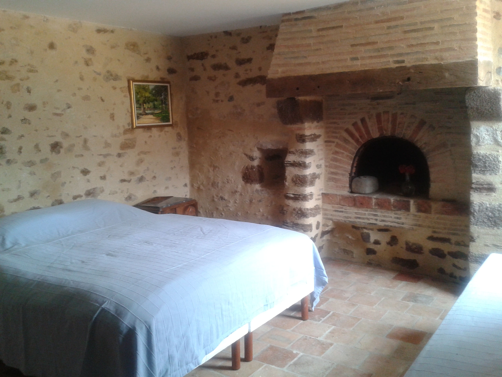
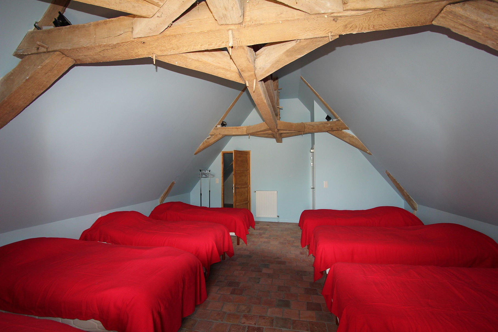

La Grande Ecurie : 32 m * 8,5m

- Chauffage au sol
- Murs enduits en pierre apparente en fin appareillage et sol en dallage de pierre
- Une grande estrade avec rambarde amovible (accueil d'orchestre)
- Grand vestiaire et nombreux sanitaires
- Cuisine traiteur avec chambre froide
- Tables rondes de 10 couverts, chaises et housses de chaises
- Parking 120 voitures
Les logements individuels

- Chauffage au sol ou chauffage radiateurs
- Salle d'eau douche à l'italienne et WC indépendant
- Chambres handicapées
Chambrées

- Larges pièces 4m sous faitage
- Chauffage radiateur
Remise du prix Foncière Lelièvre